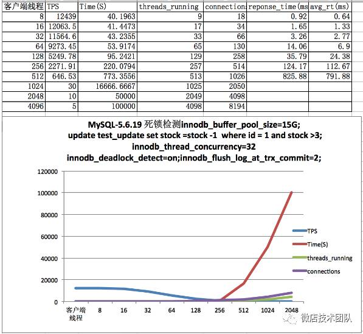

秒杀场景下开源MySQL压测及性能优化一二
前言
在2016年底发布了MySQL5.7的GA版本，但大部分公司线上用的还是5.6的版本。Facebook的MyRocks也是基于5.6进行开发，MyRocks未来会直接合并到8.0。
我们今天的分享是基于MySQL5.6.19和Percona5.6.25来进行的。我们对这两个版本，进行了MySQL源码的修改，从Facebook5.6开源版本里面抽取了关闭死锁检测的补丁，合并到了MySQL5.6.19和Percona5.6.25，并进行了性能压测。
OK，我们切入今天的主题，MySQL的热点更新场景，对应到业务场景是秒杀系统，热点商品减库存。
在性能压测计划中，主要进行了四个版本的对比：
1、MySQL5.6.19 原生版本
2、MySQL5.6.19 增加死锁检测关闭 （5.6.1.9+no deadlock check ndlc)
3、Percona5.6.25 原生版本 (percona+tp)
4、Percona5.6.25增加死锁检测关闭 (percona+tp+nldc)
对着四个版本进行了8、16、32、64、128、512、1024、2048、4096个并发线程的压测。
压测准备
压测工具 sysbench0.5。
事务隔离级别均为READ-COMMITTED，CPU 32cores，BP15G。数据放在SSD，日志放在SAS盘。
表结构和数据准备：由于秒杀和减库存重要的瓶颈之一是在update语句的效率，我们为了简单理解起见，用一个最核心的update语句来做事务。
#创建测试表 CREATE TABLE `test_update` ( `id` int(11) NOT NULL AUTO_INCREMENT, `stock` int(11) DEFAULT NULL, PRIMARY KEY (`id`) ) ENGINE=InnoDB AUTO_INCREMENT=2 DEFAULT CHARSET=utf8 insert into item.test_update (id,stock) value(1,500000); #更新语句 update test_update set stock =stock -1 where id = 1 and stock >3;Percona线程池参数：
set global thread_pool_size=16;set global thread_pool_oversubscribe=1;set global innodb_thread_concurrency=32;压测数据
先普及下压测中会用到的几个名词和死锁检测：
TPS：每秒事务量，以下表格的TPS是从sysbench反馈出来的实际事务量
Time：减掉50w库存的总时间
threads_running：MySQL的活跃线程数，MySQL Server层的用于统计MySQL当前处理链接的重要状态变量
connection：客户端到MySQL Server的链接总数，用于反映客户端的链接量。
response_time：响应时间，sysbench的执行结果最终统计值，单位是毫秒，这里是99%的事务的响应时间统计
avg_rt：平均响应时间，sysbench的执行结果最终统计值，单位毫秒，平均响应时间是(min+max+99%)/事务执行次数得到的
thread_handling：MySQL的线程处理方式，我们选择的是one-thread-per-connection.MySQL5.5企业版提供了线程池的收费版插件，5.6.19社区版不带有线程池功能。而Percona5.6.25基于MariaDB，提供了线程池功能。
innodb_thread_concurrency：InnoDB层的并发控制。由于MySQL Server是一个插拔式架构，InnoDB是存储引擎插件。MySQL Server层主要是向InnoDB发起数据的增删改查请求，InnoDB在每次接收MySQL Server的请求时，会查看自身已经在处理多少个线程了。如果这个参数的值是0，则不检查；这个参数一般是设置成服务器CPU的核数。
MySQL5.6.19 版本压测数据（默认有死锁检测）

MySQL5.6.19 版本压测数据（增加关闭死锁检测补丁，设置关闭死锁检测）
Percona5.6.25 压测数据（线程池调优+关闭死锁检测）
Percona5.6.25 压测数据 （线程池调优+死锁检测）
对上面的压测如果看的不是很明白，我们来看看256以上的几个压测数据：

还有，其他客户端连接数下的表现：
8个客户端下，原生版本的TPS比后面三个场景的TPS要高，但这么少的连接，业务很难会只给这么少连接
16个客户端连接下，原生版本TPS最高
32个客户端连接下，原生版本TPS最高
64个客户端连接下，原生版本+关闭死锁检测 TPS最高
128个客户端连接下，原生版本+关闭死锁检测 TPS最高
压测结论
1、关闭死锁检测后，5.6.19版本在1024个客户端并发连接情况下可以从30TPS提升到3924，应用程序无须更改代码，减库存性能提升120倍；
2、Percona版本由于有线程池做了一层连接的并发控制，间接减少了数据库内部的线程上下文切换和锁竞争，在1024个客户端并发连接的情况下，TPS是5.6.19+关闭死锁检测的接近1倍；
3、Percona版本+线程池调优+关闭死锁检测的情况下，在1024个客户端并发连接下，性能有小幅度提升；
4、5.6.19版本，谨慎考虑可以只增加关闭死锁检测的补丁代码，实现最小风险升级。但在微服务架构下，客户端对DB的链接越来越多，建议最终升级成Percona版本，利用线程池的优势来提升DB的稳定性；
说说死锁检测及性能优化
死锁检测：死锁检测是InnoDB的一个处理机制，每一个事务在申请一个锁的时候，发现申请这个锁需要等待，就会进入到死锁检测的过程。
死锁是数据库在并发事务场景里面场景的问题，原因是两个(或以上)不同的事务互相持有了对方需要的资源。
死锁检测的处理过程:
1.把事务等待列表和锁等待信息列表通过事务信息进行wait-for graph 检测，如果发现有闭环，则回滚undo log 量少的事务;
2.死锁检测本身也会算检测本身所需要的成本
死锁检测最后有三种情况：
1、等待图检测到死锁
2、等待图检测过久，超过了阈值
3、没检测到死锁，退出死锁检测
热点更新下的死锁检测
由于热点更新是分布式的客户端并发的向单点的数据库进行了并行更新一条记录，到数据库最后是把并行的线程转行成串行的操作。
但在串行操作的时候，由于对同一记录的锁申请列表过大，死锁检测的机制在检测锁队列的时候，反而拖慢了每一个更新。
热点更新下关闭死锁检测
这个场景，其实在2009年就有国外友人遇到过 ，链接见此http://bugs.mysql.com/bug.php?id=49047。这里面的讨论很有意思，InnoDB事务的作者对这个问题认为是业务设计不合理，觉得应该通过业务架构调整来避免。
facebook于2010年提出了解决方案 ，增加一个参数innodb_deadlock_detect，通过参数的值来判断是否进入死锁检测，实现了性能的大幅提升。具体的代码可以下载fb5.6的源码进行学习。我们也是基于fb的补丁，把对应的代码合并到了MySQL5.6.19和Percona5.6.25 。
2016年，Oracle MySQL 官方5.7.15终于合并了这个innodb_deadlock_detect的补丁。通过对比FB的补丁的实现，官方是基于FB的实现来增加功能的。
线程池
MySQL处理客户端对应的参数是thread_handling，对应了3个方式
1、no-threads
用于Linux下的debug模式，服务端只创建一个线程来服务一个客户端链接
2、one-thread-per-connection 每一个客户端链接，服务端都会创建对应的一个线程来服务，然后根据thread_cache来进行缓存线程信息以便重复使用。这种模式在低并发的时候可以极大的利用服务器资源，但到了高并发的场景下，服务端管理太多的线程反而导致上下文切换成本过高。
3、dynamically-loaded 线程池模式服务端预先根据设置的线程池大小，创建好线程，等客户端创建connections到Server后，调度线程池里面的线程来进行排队服务，可以理解为线程池帮助服务端做了一下缓冲，减少对后端的影响，后端可以更专注于本身的事情。
线程池模式在MySQL 5.5 企业版，提供了一个线程池的Plugin，专门针对MySQL的活跃线程超过一定数量（128个）性能会大幅下跌的场景。线程池通过限制了进入到存储引擎级别的线程，提高了MySQL性能的稳定。但没开源。
MariaDB 随后也开发了线程池功能，并把代码进行了开源。
Percona基于MariaDB的线程池，也增加了线程池功能，我们压测的版本Percona-5.6.25默认带有线程池功能
我们可以看一下，Oracle官方提供的线程池和没有线程池的性能对比图，性能在高并发情况下是杠杠的。
以上，就是秒杀场景下对开源MySQL几个版本的压测介绍和性能优化说明，如有不当之处，欢迎拍砖，交流！